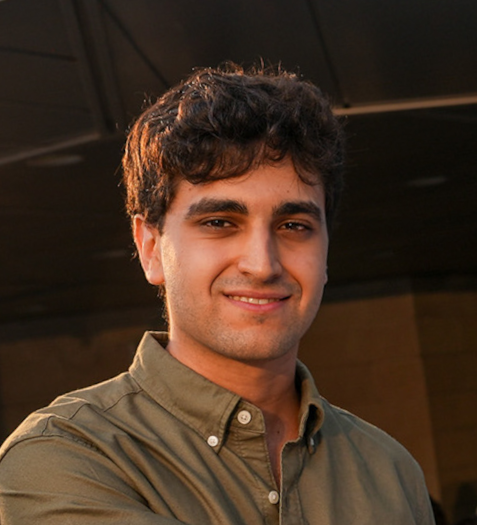
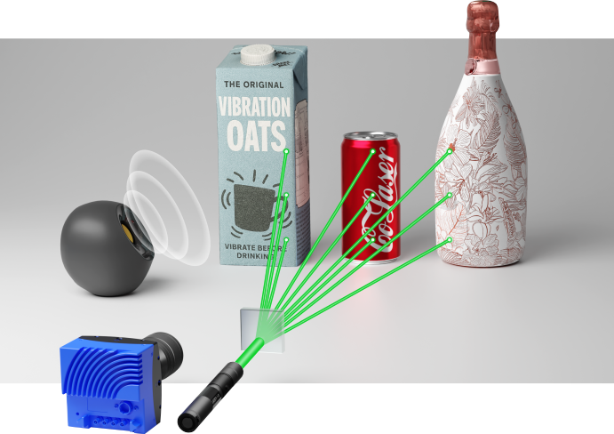

Matan Kichler
I am a Ph.D. Candidate (Direct Track) in the Department of Computer Science
and Applied Mathematics at the
Weizmann Institute of Science
advised by
Assistant Prof. Mark Sheinin.
I received my B.Sc. in Computer Science (summa cum laude)
and B.Sc. in Applied Mathematics (summa cum laude) from
Holon Institute of Technology (HIT).
My research focuses on pioneering computational imaging
techniques that unite deep learning with laser-based optical
sensing to redefine the limits of visual perception. My
vision is to illuminate unseen phenomena, enabling humanity
to measure, interpret, and understand the world in entirely
new ways.

Research

Hearing the Room Through the Shape of the Drum: Modal-Guided Sound Recovery from Multi-Point Surface Vibrations
CVPR 2026
Oral Presentation
We significantly improve speckle-based sound recovery from ordinary, acoustically poor objects by fusing signals from many surface points using a physics-guided vibration model.

Learning to See Inside Opaque Liquid Containers using
Speckle Vibrometry
ICCV 2025
Best Paper Award @ Responsible Imaging Workshop
We present a novel speckle-based vibrometry system that
captures surface vibrations of opaque liquid containers
remotely, enabling first-of-its-kind inference of hidden
liquid levels without physical handling or weighing.
Teaching
I have served as a Teaching Assistant; leading recitations, grading exams, and holding office hours for the following courses:
Weizmann Institute of Science
- Computational Imaging course (Winter 2026).
Holon Institute of Technology (HIT)
- Partial Differential Equations course (Spring 2024).
- Complex Functions course (Spring 2024).
- Probability Theory course (Winter 2024).
- Linear Algebra course (Winter 2024).
© 2026 Matan Kichler. All rights reserved.
Design inspired by Jon Barron.
Design inspired by Jon Barron.